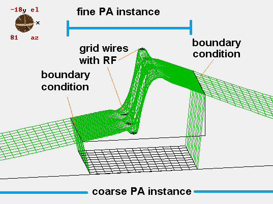

Purpose
The files in this directory provide an example of a Bradbury-Nielson Grid (BN, Gate/Shutter) [1]. It also demonstrates a special technique in splitting the system containing such a grid into two potential array instrances--a fine (high resolution) array accurately representing the grid and coarse (low resolution) array containing the rest of the system--while making sure the fields match up on both sides of the boundary between the PA instances, even when RF voltages are applied in those PA instances.

Figure: PE surface showing the transition between fine and coarse PA instances. Note that by properly defining the potentials on the edges between PA instances, we can ensure the gradient of the potential is the same on both sides of the boundary.
Version Notice
The user programming in this example uses new SIMION 8.1 features.Files in this demo:
- README.html - Description of example
- bngrid.iob - SIMION workbench, along with particle definitions (.fly2), and workbench user program (.lua). The user program has code to make the fields on the PA boundaries match up and also apply RF potentials on the gate wires.
- coarse.gem - geometry file to generate coarse array (coarse.pa#)
- fine.gem - geometry file to generate fine array (fine.pa#)
- system_inc.gem - geometry file included in other geometry files
Usage
How to run demo:
- 1. View bngrid.iob. (On main screen, click Remove all PAs from RAM, Click View, and select the bngrid.iob file.) If this is your first time using the example, you will be be asked to generate the coarse.pa# and fine.pa# array from their GEM files and then refine them (confirm that and press Refine).
- 2. Define a PE View through the center cross section of the system. (Click the ZY button. Drag a rectangle selection from roughly (z,y)=(2,50) to (z,y)=(-2,-50) mm. Click +Z3D. Click the XY button. Click PE. Do a 2D zoom on the center gate by dragging a rectangle and clicking Z2D.) A useful PE view displays.
- 3. Before doing the Fly'm, we'll first explore how SIMION can match the boundary fields under a simple static field condition. Fast adjust electrodes 10 and 11 on coarse.pa0 to 0V and fast adjust electrodes 10 and 11 on fine.pa0 to 10 V (the actual potentials chosen are arbitrary). (For example, in the PAs tab, select coarse.pa0, click Fast Adjust Voltages..., set electrodes 10 and 11 to 0 V, and click Fast Adjust. Do the same for fine.pa0, but set these to 10V.) Notice that in the PE view the fields no longer match up on the boundary (the potential jumps and the field, i.e. the slope of the potential surface, changes abruptly also). We did this only to show in the next step how SIMION can restore these potentials to their proper values.
- 4. Invoke the "reset()" function from the command bar. (In the command bar at the bottom of the SIMION window, type "reset()" (without quotes), and press the ENTER key.) Notice that the PE surface updates so that fields match up on the boundaries. again. You may want to disable "Constrn" (constrain) and rotate the view, 2D, zoom, and use other PE View options to see this better. The "reset()" function is defined in the user program (bngrid.lua) and fast adjusts the potentials on the boundaries between the two arrays to identical in potential and have the component of the field perpendicular to the boundary be identical also (i.e. the Laplace equation is satisfied on the boundary).
- 5. Set trajectory quality to 0. (Set TQual in Particles tab to 0.) This speeds up flying under RF voltages.
- 6. Enable Grouped and Dots flying. (Enable Grouped and Dots on Particles tab.) These options will be used to demonstrate how the effect of the gate on the particles depends on time-of-birth.
- 7. Fly ions. (Click Fly'm.) Notice that only ions at only a certain time-of-bith pass through. This is the purpose of the gate. You may alternately wish to view the system in XY view (without PE).
See the bngrid.lua for details on the user programming. The code uses some functionality provided by the simion.wb and simion.pas objects.
See Also
- [1] Wikipedia:Bradbury-Nielsen shutter
- Example: nonideal_grid: has a similar non-ideal grid geometry but static (not RF) potentials are applied to the grid.
Source/History
- 2012-06-27: Simplify code some and improve comments. Fixed broken example: ``reset()`` gave error "bngrid.lua:43: attempt to perform arithmetic on field 'mm_per_gu'(a nil value)" since "mm_per_gu" was renamed "scale" in 8.1.0.14.
- 2008-05: D.Manura, initial.